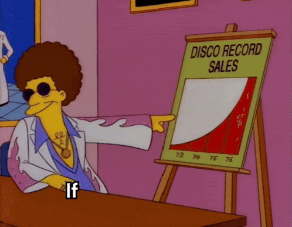

Macro indicators dashboard
A live dashboard that highlights current inflation, 10yr yield, 2yr yield, unemployment data and other datapoints from the St.Louis Fed
I currently work as a Corporate Development Associate at Synthica Energy, a startup that develops renewable natural gas. I also write about being global finance, investing and emerging industries at my substack "In Motion".
Previously, I was a senior analyst at JPMorgan Chase in their Corporate Client Banking division, where I focused on aerospace, industrial, and defense companies, and a finance analyst at Nexamp, a fast growing community solar company, where I worked on cross-functional finance initiatives. I began my career at Ernst and Young , where I got my CPA; before that, I studied at Cornell University to get my degree in finance.
A live dashboard that highlights current inflation, 10yr yield, 2yr yield, unemployment data and other datapoints from the St.Louis Fed

Designed and operationalized the go-to-market, pricing, and cost-reduction strategy for a new wildfire-suppression drone, driving market entry, margin expansion (≈10% → 40%), and scale to ~$50M ARR. For personal display, repurposed this analysis under a mock name for confidentiality
In my quest to be a better operator, I may have fallen in love with skyline chili
November 2025
Hint: It's related to a lack of government coordination
March 2025
How a circuitous route 5 years after college has informed my career so far
Aug 2025